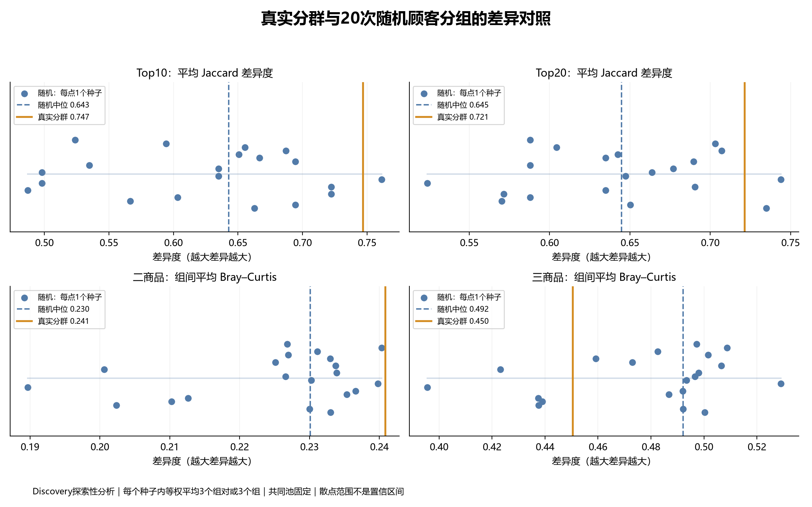
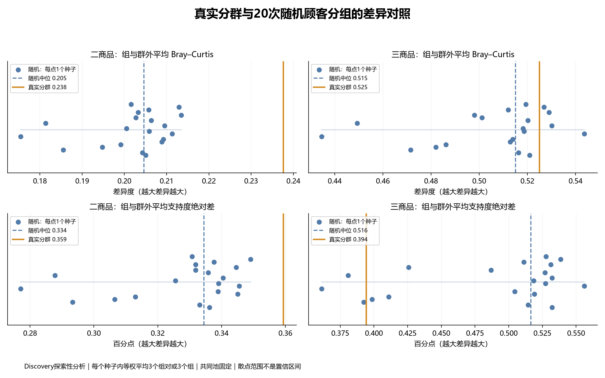

沿用既有20个seed（42–61），顾客级置换保持Profile组人数，所有方法使用同一7521个Discovery购物篮。Top-K先合并商品并集，再按最佳合格方向规则排序；K=10/20。共同池包含2134个二商品组合、2326个三商品组合，使用实际support，不把未过门槛者置零。
每个种子先对3个组对等权平均：Jaccard差异=1-J，Bray–Curtis为支持度向量距离；组vs群外先分别计算，再对3组等权平均。平均绝对支持度差以百分点表示。20个种子构成20个随机汇总值，不把60个组对当作独立样本。明细保留，未按结果挑种子。
热门榜单：真实Top10平均Jaccard差异0.747，高于19/20随机结果；Top20为0.721，高于18/20。它们位于随机结果较高端，但仍在随机最小–最大范围内。
二商品：组间平均Bray–Curtis为0.2409，略高于随机最大0.2403；组vs群外平均Bray–Curtis为0.2376，高于随机最大0.2135。两种指标均高于这20个随机结果，但幅度不同。
三商品：组间平均差异0.4505，低于随机中位0.4921；组vs群外相对差异略高于随机中位，但仍在随机范围内，绝对support差反而较低。因此不能笼统宣称真实分群比随机分组更独特。
建议汇报：RFM真实分群在当前二商品共购及热门榜单层面呈现较强差异迹象，但证据不跨所有模式长度和指标一致；需进一步检查订单规模、活跃度与Validation保持。
| metric | real | random_min | random_median | random_max | real_minus_random_median | random_less_than_real | random_equal_real | random_greater_equal_real |
|---|---|---|---|---|---|---|---|---|
| Top10：平均 Jaccard 差异度 | 0.7467 | 0.4872 | 0.6427 | 0.7613 | 0.1040 | 19 | 0 | 1 |
| Top20：平均 Jaccard 差异度 | 0.7214 | 0.5238 | 0.6449 | 0.7440 | 0.0765 | 18 | 0 | 2 |
| 二商品：组间平均 Bray–Curtis | 0.2409 | 0.1897 | 0.2301 | 0.2403 | 0.0108 | 20 | 0 | 0 |
| 二商品：组与群外平均 Bray–Curtis | 0.2376 | 0.1754 | 0.2046 | 0.2135 | 0.0330 | 20 | 0 | 0 |
| 二商品：组与群外平均支持度绝对差 | 0.3594 | 0.2771 | 0.3345 | 0.3491 | 0.0249 | 20 | 0 | 0 |
| 三商品：组间平均 Bray–Curtis | 0.4505 | 0.3955 | 0.4921 | 0.5291 | -0.0416 | 5 | 0 | 15 |
| 三商品：组与群外平均 Bray–Curtis | 0.5250 | 0.4346 | 0.5151 | 0.5436 | 0.0099 | 16 | 0 | 4 |
| 三商品：组与群外平均支持度绝对差 | 0.3943 | 0.3612 | 0.5165 | 0.5561 | -0.1221 | 3 | 0 | 17 |

